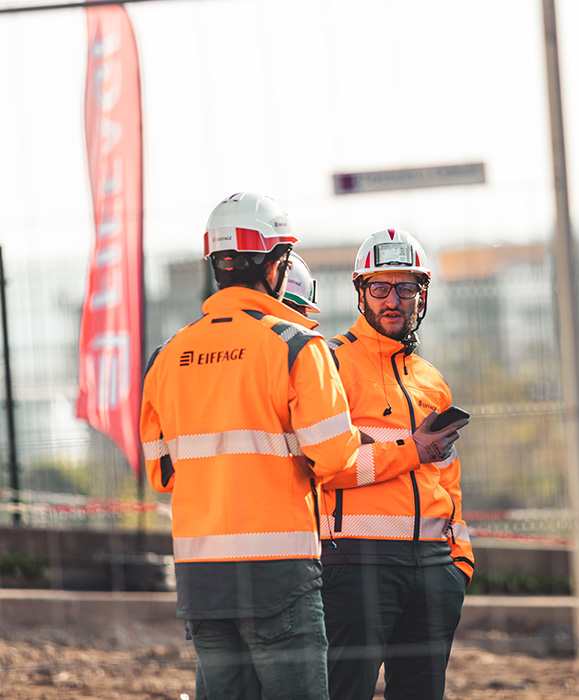

| Caractéristique | Élément de réponse | Justifications |
|---|---|---|
| Nom de l'organisation | Eiffage | |
| Type d'organisation | Entreprise privée, groupe | |
| But/Finalité | Finalité lucrative | |
| Nationalité | Nationalité française | Siège sociale en France, à Vélizy |
| Champ d'action géographique | Local, régional, national et européen | Entreprise connue en Europe |
| Taille | GE (Grande Entreprise) | 84 400 Salariés |
| Type de production | Concessions, services à l'énergie et construction | Production industrielle routière, Aménagements urbains, mise en œuvre de structures métalliques, la démolition, déconstruction sélective |
| Activités | Production de biens et services | Production industrielle routière, Aménagements urbains, mise en œuvre de structures métalliques, la démolition, déconstruction sélective |
| Secteur(s) d'activités | Secondaire et tertiaire : Fabrication / production industrielle, activités de construction assimilées à de la transformation. Construction et génie civil, services liés à l'ingénierie, la maintenance, l'énergie, immobilier et développement urbain | |
| Ressources |
Ressources Humaine : 84 400 Salariés Ressources Immatérielle : Savoir-faire, réputation, brevets, licences, procédés techniques, Systèmes d'information Ressource Matérielle : Engins de chantier, ateliers de structures métalliques, usines de préfabrication béton, matériel technique échafaudages coffrages, outils professionnels, véhicules de chantier, concessions et exploitations (autoroutes APRR/AREA, parkings, infrastructures exploitées) Ressources industrielles : Usines de préfabrication béton, Ateliers de structures métalliques, Sites de recyclage, Engins de chantier, traitement de matériaux, systèmes de modélisation BIM, ateliers de maintenance et dépôts techniques Ressources financières : Chiffre d'affaires de 5,6Mds€, en hausse de 8,3 %, Travaux + 9,4 % (+ 5,6 % PCC), Carnet de commandes des Travaux à 29,7Mds€, Refinancement des lignes bancaires du Groupe pour un total de 4,4 milliards d'euros |
|
